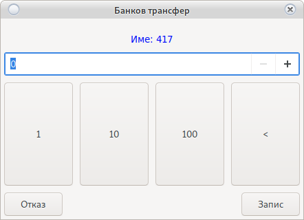

Модул клиенти
Това е основния модул за управление на клиенти.

Търсене на клиент
В най-горната част на основния прозорец се намира поле за търсене.
От падащото меню се избира критерий пример Име и се въвежда Име или първи букви. С натискане на бутон enter системата ще извърши филтриране.
Внимание!
Разпознава малки и главни букви.
Филтър по група
В лявата час има на основния прозорец има вградени филтри. С единичен клик върху някоя от групите системата ще покаже клиентите намиращи се в тази група.
Добави/Редактирай група
За добавяне на нова група използвайте бутона
Добави група
За редакция на вече съществуваща група:
Кликнете с двоен клик върху името на групата от
Системата ще отвори прозорец за настройка на група
]
Промяна на настройките на група, ще промени всички потребители в групата.
Ако изрично не е зададено, че потребителя използва индивидуални настройки.
Погледни Тук
Име на група
Името е свободен текст. Използва се за да може потребителя да разпознае една група от друга.
- Позволена за избор
Крупиетата могат да избират само тази група
Внимание!
- Разпознава малки и главни букви
- Не е възможно повтарящи се имена
Процеси
Това са отметките в каре Process
Те определят дали групата ще отчислява за Мъни Бек, Талони и Бонус сандъци
Внимание!
В случай, че процеса е спрян от тук, то нито една настройка на съответния процес няма да работи
Мъни Бек
Това са настройките на Мъни Бек системата
Погледнете карето Monyback
То съдържа две полета:
Процент на отчисление
Процента на отчисление е на база бет или работи като индивидуален джакпот сървър.
1 е 1% от всеки залог
Внимание!
1 лев = 100 стотинки 1% от 100 стотинки = 1 стотинка
Минимално изплащане
Минималната сума в лева до която трябва да достигне клиента, за да може бъде изплатена от крупието. Само суми по-големи или равни на зададената могат да бъдат изплатени.
Внимание!
Системата изплаща само цели суми. Натрупаните стотинки остават по баланса на клиенте без да се губят
Максимално изплащане
Ако мънибека достигне зададената сума лева спира да се трупа, докато клиента не си го вземе
Талони за томбола
Това е системата за натрупване на талони за томбола. Погледнете карето Draw което има две настройки
Начин на пресмятане
Има два възможни начина на пресмятане на броя талони: * По Бет (развъртяни пари) * По Вход (Вкарани пари)
Внимание!
Не препоръчваме пресмятане по вход. То дава предпоставки да се правят злоупотреби с вход/изход. В бъдещи версии ще бъде премахнато пресмятането по вход.
коефициент
коефициента на талоните е на база 100
или
1% = на 1 талон на 100 лева Бет
0.5 = половин талон на 100 лева
Бонуси
Това е системата за настройки на сандъците с бонуси излизащи на дисплея на SMIB контролера.
Използвайте скрола докато не видите

Секция Суми
- Опция на сума
Това е сумата на която да се покаже бонуса. В зависимост от избраната опция тя е по вход или бет. При избор на опция На загубени Пари бонуса ще се покаже след като общия тотал на клиента достигне посочената сума (настройката за кредит под сума Тук)
- Превъртане на бонус
Превъртането на бонус изисква AFT. При зададена опция 1 бонусът няма да изисква превъртане. При 2 ще е нужно да се превърти два пъти.
Превъртането може да е по вход или:
При бонус 20 лева с превъртане х2 изхода ще стане възможен на 40 лева кредит. В случай на активна опция Изчакай вход равен на бонуса с превъртане х2. При 20 лева бонус системата ще чака 20 лева вход, аут ще бъде възможен при достигане на 80 лева кредит.
Превъртане с опция По Бет:
Кредита ще бъде игнориран и системата ще позволи аут когато бета стане равен или по-голям от бонуса Х опцията за превъртане или кредита падне под Погледни тук.
- Предупреди за бонус
Когато тотала на клиента достигне посочената сума, на дисплея ще се покаже надпис приканващ клиента да изтегли хартиен бонус.
Секция видове сандъци
-
По IN
Пресмятането на бонуса ще се извърши по тотала на клиента.
-
По Bet
Пресмятането на бонуса ще се извърши по Bet на съответната машина.
Не изчислява бета от всички машини на които клиента е изиграл през деня
-
По тотал
Засича разликата между вкарани и изкарани пари. Пример: Вкарват се 20 лв и се вадят 50 тотала ще бъде -30 и сумата ще намалее. Ако са 50 вкарани на 20 изкарани тотала ще бъде 30 лв.
-
Директен
Веднага след поставяне на картата на клиента ще се покаже бонус
-
Не усвояем
Бонуса минава като вход. Не може да се извади, но печалбата може.
Пример: Влизат 100 бонус и клиента прави една врътка на 1 лев. Натискаш аут и не може. Правиш втора врътка на 1 лев и машината ти връща 10. Кредита става 100-2+5 Ако натиснеш кешаут можеш да вземеш 3 лева
-
Допълнителни опции за настройка
-
Удържане
Ако бонусът не е загубен ще се извърши Удържане Удържането може да бъде справочно или зачислено към касата на крупието Погледни Тук
-
Веднъж на ден
Бонус ще излиза само веднъж на ден за един клиент. Няма значение с колко карти играе клиента.
-
Предходен тотал
Активна при бонус тип По IN и Веднъж на ден. Бонус ще се покаже само в ситуация в която клиента е загубил съответната сума предходния ден. Изчислява се тотал на клиента от всички машини на които е играл предходен ден
-
Текущ месец
Активна при бонус тип По IN и Веднъж на ден. Бонус ще се покаже само в ситуация в която клиента е загубил съответната сума текущ месец. Изчислява се тотал на клиента от всички машини на които е играл текущ месец
-
Изчакай вход
След избиране на бонус сандък и приемане на бонуса системата ще изчака вход равен на сумата на бонус.
-
Много от редирект
Един бонус на ден има такава отметка. Много от редирект това е един бонус от една група на ден, но не е проблем да са 2,3 и повече ако са от различни групи.
-
Внимание!
- Всички бонуси могат да бъдат приети или отказани.
- Отказаните бонуси остават активни до пускане на дневен отчет.
- Отказаните бонуси могат да бъдат играни по всяко време и на всяка машина.
- Системата приема кредита при премахване на карта като OUT
- Системата приема кредита при поставяне на карта като IN
- Внимавайте със стотинките в кредита. Може тотала да не достигне нужната сума.
- Допустима разлика от стотинки Погледни тук
Информация!
Системата за бонуси може да работи С AFT и Без AFT
- С AFT бонусите ще влязат директно в машината
- Без AFT бонусът ще иска между едно и три завъртания
Без AFT съобразете кредита в машината
Дни от седмицата
Бонусите ще бъдат активни само в избраните дни.
При активиране в Сряда бонусите ще са активни от дневния отчет пуснат в Сряда до дневния отчет пуснат в Четвъртък.
За по специална настройка погледнете Пренасочване на група
Внимание!
В случай на използване на Пренасочване на група изберете опция Всички Дни
Секция Бонус купа
В основната си част представлява купа в която поставяте брой бонуси от определена сума.
Колкото повече бонуси има от определена сума, толкова шанса да бъдат изтеглени се увеличава.
Купата не свършва и при всяко теглене се вадят старите бонуси и се пълни отново.
Внимание!
Тегленето на бонуси е на случаен принцип.
Всичките сандъци съдържат случайно изтеглени 5 суми.
От там зависи от избора на клиента.
Добави/Редактирай клиент
Добавяне на клиент се извършва от бутона Нов Клиент
За редакция изберете нужния клиент и натиснете Редактирай Клиент
Ще се отвори следния прозорец:
Добавяне на снимка на клиент
В разработка. Не активен бутон.
Секция Група
Избирате група на клиент от падащото меню.
Задължителен атрибут.
В случай, че няма създадена група използвайте Добави Група
Секция Карти
Добавяне на карти на клиент.
Няма ограничение в броя на картите.
Картите не съдържат никаква информация за клиента или натрупаните от небо бонуси.
-
Бутон

Добавя карта на клиент.

Поставете картата на четеца и натиснете Запис Картата е добавена и всички машини ще разпознаят клиента.
-
Бутон

Премахване на определена карта от клиент.
Поставете картата на четеца и натиснете Запис Картата ще бъде премахната и няма да е активна на нито една машина.
-
Бутон

Премахва всички карти на клиент. Всички карти ще бъдат премахнати и няма да бъдат активни.
Лична информация
Задължително е Име на клиент и Населено място
Името трябва да е уникално. Разпознава малки и ГЛАВНИ букви.
Населено място се избира от падащото меню.
В случай, че липсва използвайте бутона Добави и ще се отвори
Името на града трябва да бъде уникално. Разпознава малки и ГЛАВНИ букви. След запис Населеното място ще се появи в падащото меню.
Всички останали атрибути могат да останат празни.
Внимание!
В случай, че решите да попълвате останалите атрубути
Спазвайте закона за лични данни на съответната страна.
Забрана
Ще деактивира клиента. Картите на клиента няма да бъдат разпознати от машините. Няма да позволи изплащане на Мъни Бек и отпечатване на Талони
Вписан в НАП
Клиенти които са се вписали в НАП в регистъра за зависими от хазарта. Иска токен и не трябва да се допускат да играят.
PIN код
В разработка. Не се използва в тази ревизия.
Персонални настройки
Указва, че клиента не зависи от групата и има индивидуални настройки.
В случай на промяна на групата, настройките на този клиент няма да бъдат променени.
За да настроите клиента индивидуално изберете тази опция. Логиката на всички настройки е като настройките на Нова Групата
Изплати мънибек
Изплащане на Мъни бек Изисква активен RFID четец
Изисква картата на клиента да бъде маркирана от крупие на работния четец.
Поставете картата в четеца. Ако сумата на натрупания Мъни Бек отговаря на минимално зададената
Натрупания Мъни бек ще бъде занулен и ще бъде приспаднат от касата на крупието.
Внимание!
Изисква права за достъп Изплаща се само цяла сума. Стотинките остават в профила на клиента.
Изплати мънибек без карта
Избирате клиента от основния прозорец
С десен бутон ще се отвори меню.
Избирате Изплати МъниБек без карта
Натрупания Мъни бек ще бъде занулен и ще бъде приспаднат от касата на крупието.
Внимание!
Изисква права за достъп Изплаща се само цяла сума. Стотинките остават в профила на клиента.
Премахни загуба на карта
При неправилна работа на rfid четеца се получава загуба на клиент.
Всяка загуба се натрупва с обща статистика като вход и изход.
Възможно е статистиката да получи неочакван тотал и да не отвори бонус.
Бутона ще премахне нужната статистика.
Внимание!
Премахва целия Кредит IN и Кредит OUT
Първо проверете статистиката за загуба.
Използвайте в краен случай!
Печат на талони
Печат на Талони Изисква активен RFID четец
Изисква картата на клиента да бъде маркирана от крупие на работния четец.
Поставете картата в четеца.
Натрупаните Талони ще бъде занулен и ще бъде разпечатани на пос принтер.
Внимание!
Отпечатва се само цял талон. Останалата част остава в профила на клиента
Изисква настройки на POS принтер:
Погледни
Печат на талони без карта
Печат на Талони
Поставете картата в четеца.
Натрупаните Талони ще бъде занулен и ще бъде разпечатани на пос принтер.
Внимание!
Отпечатва се само цял талон. Останалата част остава в профила на клиента
Изисква настройки на POS принтер:
Погледни
Свободни талони
В случай на машина без възможност за монтиране на SMIB контролер, талоните могат да бъдат отпечатани свободно.

Въвеждате брой талони и Име на клиент. Талоните ще бъдат разпечатани.
Внимание!
Изисква настройки на POS принтер:
Погледни
Добави пари в карта
Това е каса на казиното. Изисква карта на клиент.
Изисква AFT и на настройка на SMIB секция keysystem
Парите добавени в картата на клиента ще бъдат добавени в касата на крупието.
Маркирайте картата на четеца
Ще се зареди прозорец

След поставяне на карта в машина, машината ще направи IN за същата сума Тази сума няма да се вземе под внимание при отчет.
Внимание!
Не работи с две карти. Първата машина ще вземе целия кредит.
В разработка.
Изплати пари от карта
Това е каса на казиното. Изисква карта на клиент.
Изисква AFT и на настройка на SMIB секция keysystem
Парите изплатени от крупие ще се извадят от касата на крупието и ще бъдат занулени в касата на клиента.
Маркирайте картата на четеца
Натиснете Запис
В случай, че клиента извади карта от машина. Машината ще направи OUT който няма да бъде взет под внимание при отчет.
Внимание!
Не работи с две карти.
В разработка.
Пари през ATM терминал
При наличие на пос терминал.
Сумата постъпила през терминала и сложена в машината е разход за крупие.
Избира се клиента и с дясно копче на мишката се избира ATM
Избира се сумата на транзакцията.
Сумата ще бъде извадена от касата на Крупие и не е нужно писането на разход.
Бърза справка за клиент
Това е бърза справка. Служи когато искаме бързо да проверим клиента и да го разпределим в група.
Отваря се с Двоен клик на клиента
Внимание!
Погледнете датата на справката.
Пренасочване на група
Може в определени дати и часове една група от клиенти да бъде пренасочена с настройките на друга.
Фини настройки
Отваря се с дясно копче на мишката върху филтър
Ще зареди

Правилата за пренасочване на група са с уникални имена.
-
Бутон
Добавя ново правило за пренасочване.
-
Бутон
Изтрива правило за пренасочване.
Системата позволява всички клиенти от група Х да приемат настройките на група Y в определен период от време.
Внимание!
Не работи за клиенти с индивидуални настройки.
Погледни ТУК Пренасочванията променящи бонусите на база тотал са с по-нисък приоритет и не се изпълняват ако има друго активно пренасочванеВажно!
Дните на активност на бонуса не се присвояват при пренасочване.
Или ако група X не работи в сряда то и пренасочването няма да работи.
При добавяне на пренасочване ще видите

Името на пренасочването е свободно, но трябва да е уникално. Служи за разпознаване от потребителя.
Бонусите ще се покажат в справките с името на основната група на клиента, не с пренасочената.
-
От Група
Това е групата която за смени настройките си
-
Да стане
Групата чиито настройки да приеме. Дори и група Y да няма никакви клиенти Всички клиенти на група X ще вземат нейните настройки в посочения интервал.
Интервала е ден от седмицата от час до час -
При тотал до
Ако опцията се активира променя сумата на бонусите ако тотала е на база предходен ден в зависимост от загубената сума. Не трябва да има пренасочвания с по-висок приоритет.
Резервация на машина за клиент
С десен бутон на мишката на името на желания клиент и избирате Резервация

Въведете до кога да бъде резервирана избраната машина и използвайте Запис
Внимание!
Избраната машина ще се заключи по SAS.
Машината ще се отключи след поставяне на карта принадлежаща на клиент или
След достигане на посоченото време.Важно!
При грешка използвайте авариен бутон Отключи SMIB или рестартирайте SMIB контролера.